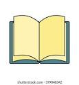

The man who was late
 Once there was a man called mark. He worked at DouhNuts creating weired and wacky donuts for children. He loved his job!
One morning he woke up to realised he missed his alarm! The bus he gets on had left half an hour ago and he was going to be late! He rushed and got ready, straightened up his tie and ran to his car as fast as his left could carry him.
After a short drive, He came across a bus and it wasn't working. He decided to help the driver to get it working and after some hard work, IT WAS FIXED! He could finally get to work. or so he thought.
After he arived there was saign reading: CLOSED! He was not sure what to do so he returned home. we sat at his desk before calling the boss.
"Ello?"
"Hi it's mark! I was wondering why the office was closed today?"
"We had a new office down from there away from city center remeber. I sent it in an email!"
Mark had COMPLETLY forgotten about this email and on the morning he was in such a rush he forgot.
Felling now quite foolish, He drove out to the new office. He met his boss there who was not very happy.
"WHERE HAVE YOU BEEN!"
"I woke up late, then I got stuck behind the broken bus so I helped fix it, then after that I forgot about the new office and I was not sure. Sorry"
"WELL! next time tell me first. I'd have come to get you if you told me on the phone!"
Now mark workes at home and makes lots of important decisions on what they should do.